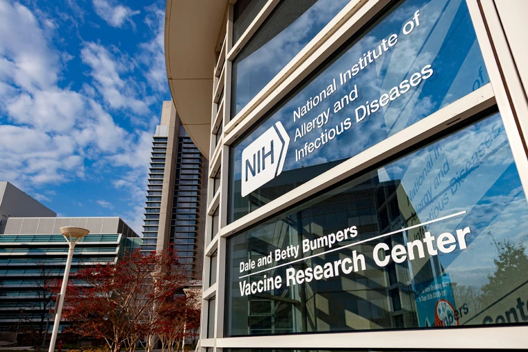
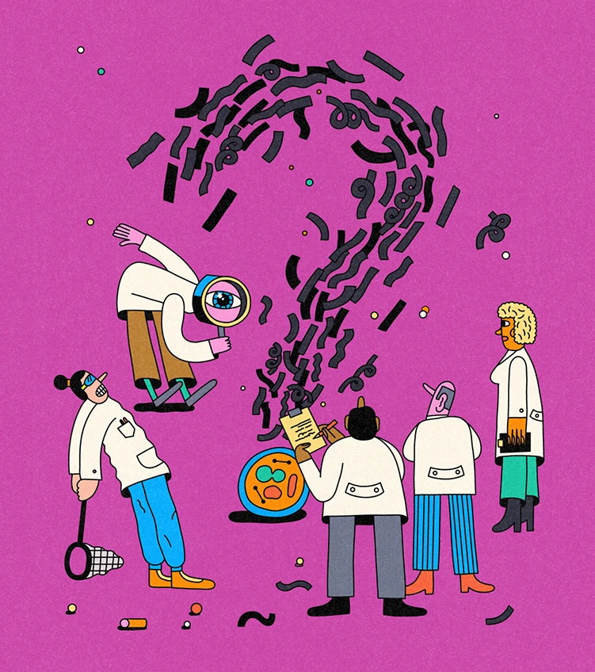

Понад сто років тому вчені виявили, що бджол приваблює нектар.

Chinese technology start-up DeepSeek has taken the tech world by storm with the release of two large language models (LLMs) that rival the performance of the dominant tools developed by US tech giants — but built with a fraction of the cost and computing power.
Confusion and anxiety is rippling through the US health-research community this week following Donald Trump taking office as the 47th US president. His administration has abruptly cancelled research-grant reviews, travel and trainings for scientists inside and outside the National Institutes of Health (NIH), the world’s largest public biomedical funder. Adding to the worry: the Trump team appears to have deleted entire webpages about diversity programmes and diversity-related grants from the agency’s site.
The production of fake research is now a thriving industry, thanks to paper mills. These networks sell paper authorships and poor-quality or fabricated scientific manuscripts to researchers, or violate the peer-review process by providing fake reviews. And they have become so prolific that current self-correction mechanisms no longer work.
In 2009, Jonathan Weissman was hunting for a new way to spy on what happens inside a cell. In particular, the molecular cell biol ogist wanted to know what proteins are produced at any given moment. So his laboratory came up with a way to directly measure the output of ribosomes — the cell’s protein factories.